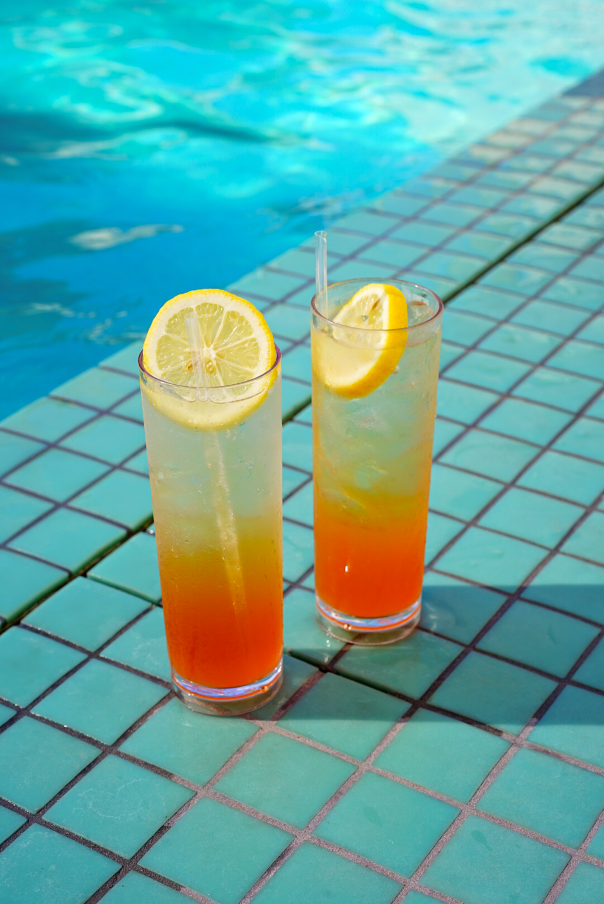

A Midsummer of Forget-Me-Not

Photo by Megan Bucknall on Unsplash
Description
Lemon, orange and more lemons
Ingredients
- 30
- 1.5 cups buttermilk
- 0.50 cup vegetable oil
- 4.50 cups all-purpose flour
- 1 teaspoon salt
- 0.50 teaspoon baking soda
- thyme
Directions
- Step 1
In a large bowl.
- Step 2
Pour t.
- Step 3
On
- Step 4
Bake in preheated oven